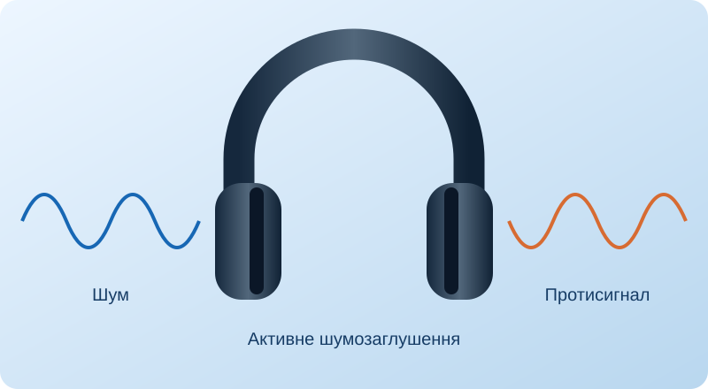

Знищити звук звуком
Чому навушники приглушують гул двигуна краще, ніж розмову?
Наукова схема

Ваш виклик
Ви налаштовуєте систему шумозаглушення. Знайдіть умови, за яких залишковий звук мінімальний, і з’ясуйте, чому одного налаштування недостатньо для всіх частот.
Коротка теорія
Звуковий тиск у лінійному наближенні додається. Для двох синусоїд однакової частоти результат має амплітуду R = √(A²+B²+2AB cos φ). При рівних амплітудах і фазовій різниці 180° тиск у точці спостереження компенсується. Це не означає зникнення енергії всюди у просторі.
Затримка τ дає фазовий зсув 2πfτ. Рівень залишку відносно початкового тиску: 20 log₁₀(R/A) дБ. ANC використовує мікрофони, обробку сигналів і динаміки; реальні системи мають частотно залежні характеристики.
1. Полювання на тишу
Передбачте фазу мінімуму. Знайдіть налаштування із залишком менше −15 дБ. Потім змініть амплітуду і перевірте, чи можна компенсувати шум лише фазою. Запишіть три результати.
Синій — шум; помаранчевий — протисигнал; чорний — сума. Горизонтальна вісь — час, два періоди.
Почніть із мінімальної гучності пристрою. Звук тихий, синтетичний; не використовуйте для перевірки слуху.
| B/A | φ | Залишок, дБ |
|---|
2. Ціна затримки
Система створює ідеальний протисигнал, але він запізнюється. Передбачте, яка з частот постраждає більше. Проведіть вимірювання для трьох затримок. Знайдіть найбільшу затримку, за якої всі три частоти мають залишок нижче −10 дБ.
| мс | 100 Гц | 500 Гц | 2000 Гц |
|---|
Підказка: залишкова амплітуда 2|sin(πfτ)|. Перевіряйте також проміжні частоти: періодичність може створювати оманливі мінімуми.
3. Тиша в одному місці
Уявімо дві зустрічні плоскі хвилі однакової амплітуди, протифазні в точці x = 0. Дослідіть, як змінюється залишок при переміщенні слухача. Знайдіть перший максимум для 500 Гц і порівняйте з 1000 Гц.
4. Інженерне рішення
Модель шуму містить три незалежні тони: 100, 500 та 2000 Гц з однаковою початковою амплітудою. У системи затримка 0,3 мс. Оберіть, які частоти компенсувати, щоб зменшити сумарний середньоквадратичний тиск. Порівняйте щонайменше три стратегії.
Наука навколо Вас
Якщо маєте навушники з ANC, у тихому безпечному місці порівняйте сприйняття вентилятора та голосу при ввімкненому й вимкненому ANC, без музики. Не робіть дослідів біля транспорту. Без ANC порівняйте приглушення звуку долонями біля вух: це пасивна ізоляція, не активна компенсація. Запишіть умови й суб’єктивні результати; не видавайте їх за вимірювання децибелів.
Наукова цікавинка
За швидкості звуку 343 м/с довжина хвилі 100 Гц становить близько 3,43 м, а 2000 Гц — 17 см. Тому невелика зміна положення сильніше впливає на фазу високочастотного сигналу.
Ваш висновок
Ваше майбутнє у ФТІ
Обробка сигналів, акустичні вимірювання, оптимізація алгоритмів — задачі прикладної фізики та прикладної математики.
Джерела для поглиблення
OpenStax: стоячі звукові хвилі. S. M. Kuo, D. R. Morgan, Active Noise Control Systems, Wiley, 1996.